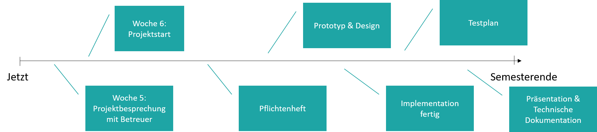

Projekt / Projektideen
Marcel Lüthi
Departement Mathematik und Informatik
Ziel des Projekts
In kleinen Teams Ganttproject weiterentwickeln.
- Anwendung der erarbeiteten Konzepte
- Durchlaufen der Projektphasen
- Anforderungsanalyse
- Prototyping / Design einer Erweiterung
- Implementation
- Testing
- Dokumentationen erstellen
- Im Team arbeiten.
Weitere Ziele
- Spass haben
- Ganttproject verbessern
- Selbstbewusstsein stärken
"Ja, ich kann auch an einem komplexen Projekt mitarbeiten!"
Teams
- Mindestens 2 Personen pro Team
- Grosse Teams möglich
- Jeder muss wohldefinierte Aufgabe haben
- Pass/Fail individuell möglich
Projektablauf, Meilensteine
- Jeder Meilenstein wird mit Betreuern besprochen
- Jeder Meilenstein muss erfüllt werden
Projektideen
- Planen mit Unsicherheit (2-4 Personen)
- Bedingte Tasks
- Integration von Github Issues
- Interface verbessern (Accessibility, Nutzbarkeit)
- Neue Grafische Auswertungen
- Gamification (z.B. Bonuspunkte für abgearbeitete Tasks)
- Eigene Ideen
Inspirationsquellen: Issues von Ganttproject issues, MS-Project
Kriterien für gutes Projekt
- Sollte Funktionalität von Ganttproject erweitern
- Sollte Trennung von Aufgaben erlauben, aber Zusammenarbeit erfordern
- Sollte alle Projektphasen erfordern
- Sollte testbar sein
- Sollte nicht zu ambitioniert sein.
Nächste Schritte
- Gruppen bilden
- Projektidee ausarbeiten
- Verantwortlichkeiten definieren
Mail mit Idee, Gruppenmitgliedern und Verantwortlichkeiten an Michael, Jan und Marcel
bis spätestens Montag Mittag, 15. Oktober